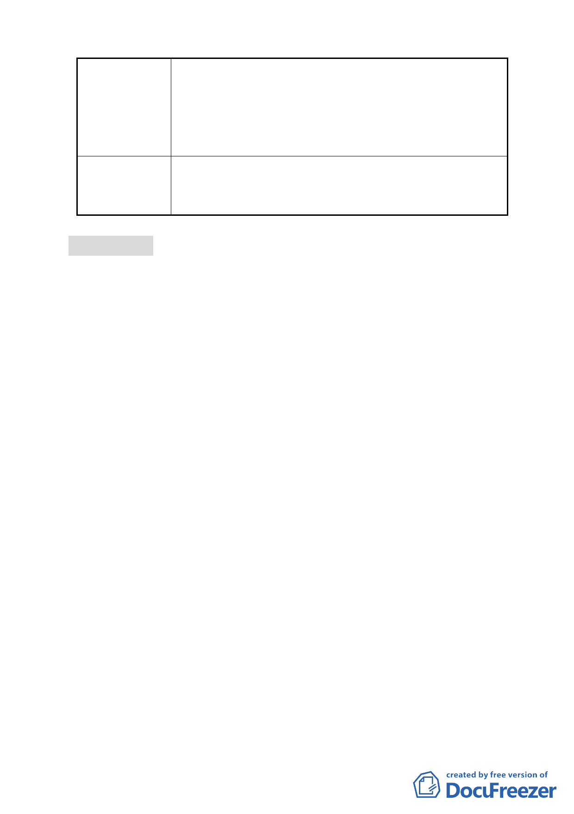

1.不同意變更為電力設施用地，興建住宅配售員工或出
售市民，並規劃停車場供居民使用。
建 議 辦 法 2.維持住三用途，興建住宅性質建物，並結合當地里民
休閒活動場所所需，以作回饋。
3.台電公司作住三用途，不作營造使用，且不得變更。
本案細部計畫內容涉及變更後之使用分區名稱適用性，
委 員 會 決 議 及其用地取得方式之適法性與取得費用之經費支應程序
等疑義尚待釐清，全案退回市府依程序辦理。
討論事項 二
案名：變更「臺北市北投區崇仰段三小段 68 地號等 36 筆土地為
同小段同地號等 35 筆土地更新單元」範圍案
案情概要說明：
一、本更新單元位於臺北市天母西路 117 巷東側及天母西路北側
之街廓內，計畫面積 2,245.45 平方公尺。
二、本案更新單元土地使用分區為商三特及住三，案前經市府於
97 年 7 月 2 日公告自行劃定更新單元，嗣於 97 年 9 月 26 日
經市府核准都市更新事業概要在案。
三、茲因同地段 94 地號之所有權人明確表達不同意參與都市更新
案並全數出具不同意參與更新意願書在案。故為尊重該所有
權人意願，並保障有意願參與更新重建之所有權人之權益，
爰辦理變更劃定更新單元範圍。
四、變更計畫內容：
計畫範圍排除崇仰段三小段 94 地號 1 筆土地（面積 329.73
平方公尺），並配合修正「計畫面積」、「土地權屬」、「建物權
屬」、「居民意願」等數值及「實質再發展」之文字說明「規
劃低樓層作為商業使用，高樓層以住宅使用為主之住商混合
的優質社區」為「規劃作為住宅使用之優質社區」。
五、本件係市府以 98 年 4 月 13 日府都新字第 09830311900 號函
送到會。
六、申請人：薛凌。
-6-